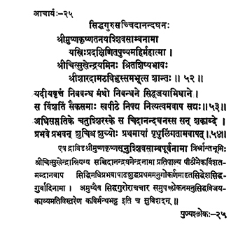

25. आचार्य - 25 - सिद्धगुरुसच्चिदानन्दघनः
श्रीमुष्ण ••• शान्तः ॥ ५२ ॥
यदीयवृत्तं ••• सद्यः ॥ ५३ ॥
अधिसप्ततिके ••• तामवापत् ॥ ५४ ॥
The noble son of Śrīkṛṣṇa of Śrīmuṣṇa by name Śivasāmbha who went round the earth thrice, became a disciple of Śrīcitrukha through initiation, and later became the head of Śrī Śārada maṭha.
He (Śrī Citsukhendra), whose biography was composed by Mantha in his work titled Siddhajaya adorned the piṭha for twenty-one years and attained immortal state.
He, the austere, Saccidānandaghana attained immortality in the form of Śivaliṅga on the first day of the bright fortnight in the month of Āṣāḍha of Prabhava year in the Śaka era 470.
